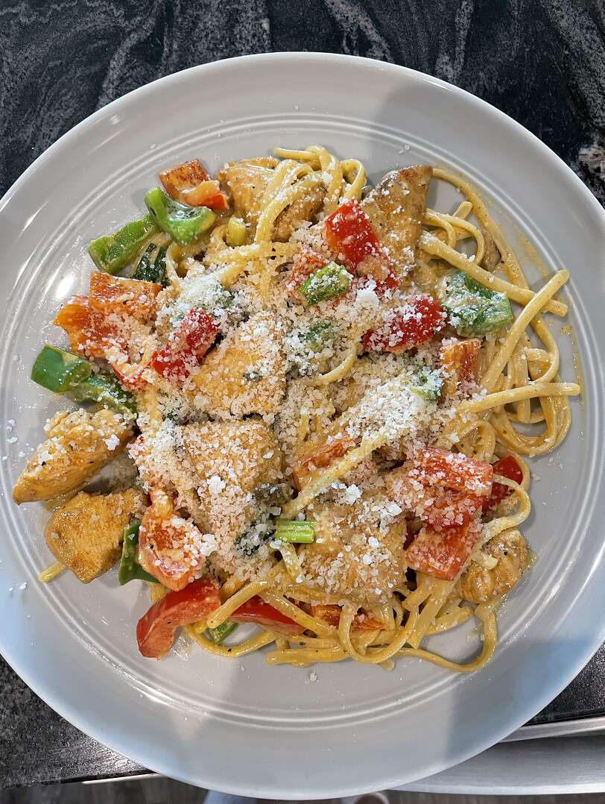

Recipe Description
Cajun cuisine often referred to as "country food" originated from the term "les Acadiens," which was used to describe French colonists who settle in the Acadia region of Canada. Many Acadiens eventually settled in the swampy region of Louisiana.
Today's recipe will focus on infusing some of that cajun delicious spices into pasta and chicken. A lunch or dinner delight, this recipe is both delicious and hearty; a treat for any family gathering.
Ingredients
- 4 ounces linguine pasta
- 2 skinless, boneless chicken breast halves
- 2 teaspoons Cajun seasoning
- 2 tablespoons butter
- 1 red, 1 green bell peppers, sliced
- 4 fresh mushrooms, sliced
- 1 green onion, chopped
- 1 cup heavy cream
- 1/4 teaspoon dried basil
- 1/4 teaspoon lemon pepper
- 1/4 teaspoon salt
- 1/8 teaspoon garlic powder
- 1/8 teaspoon ground black pepper
- 1/4 cup grated Parmesan cheese
Steps
- Bring a large pot of lightly salted water to a boil. Add pasta and cook for 8 to 10 minutes or until al dente; drain.
- Place the chicken and the Cajun seasoning in a plastic bag. Shake to coat. In a large skillet over medium heat, saute the chicken in butter or margarine until almost tender (5 to 7 minutes).
- Add the red bell pepper, green bell pepper, mushrooms and green onion. Saute and stir for 2 to 3 minutes. Reduce heat.
- Add the cream, basil, lemon pepper, salt, garlic powder and ground black pepper. Heath through. Add the cook linguine, toss and heat through. Sprinkle with grated Parmesan cheese and serve. Enjoy!